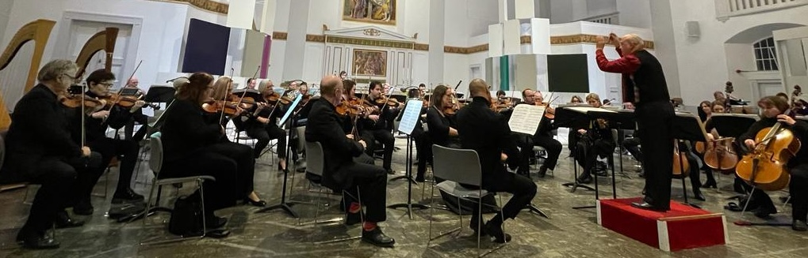

“The Westminster Philharmonic is notably adventurous in its programming and large-scale music is widely featured.”
Join the Orchestra
The Westminster Philharmonic Orchestra welcomes experienced amateur musicians who share a passion for ambitious orchestral repertoire. We rehearse on Sundays, 2:30pm–5:30pm in central London.
We are currently seeking players in the string sections: violins, violas, cellos, and double basses.